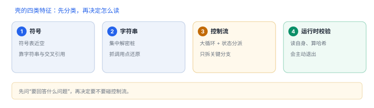

企业壳：特征、拆解顺序与识别
壳不是“加密”，是让符号、字符串与控制流三样东西都变难读
企业壳与加固工具做的事可以归成四类：藏符号、藏字符串、打乱控制流、加运行时校验。识别壳的类型，等于先知道自己在跟哪一类成本打交道。
1. 四类特征
| 类型 | 典型特征 | 分析成本 |
|---|---|---|
| 符号处理 | 符号表近空，但字符串仍在 | 低：靠字符串与交叉引用 |
| 字符串加密 | 集中出现解密桩，参数是常量地址 | 低到中：抓调用点即可 |
| 控制流平坦化 | 大循环 + 状态变量分派 | 中到高：行号与栈失真 |
| 运行时校验 | 启动早期读自身、算哈希、比对 | 高：会主动退出 |

2. 先判断“有没有壳”，再判断“是哪一种”
- 看包体：主二进制是否明显偏小、是否多出大体积资源或未知框架。
- 看符号：导出与类名是否成规模消失，字符串是否可读。
- 看启动：是否有明显的延迟、退出与自检行为。
- 看依赖：是否引入了解释器式的框架或异常大的常量段。
不要从“像不像壳”开始
先问“我要回答什么问题”。如果只是想确认某个功能在不在，符号与字符串往往就够了，不必先脱壳。
先问“我要回答什么问题”。如果只是想确认某个功能在不在，符号与字符串往往就够了，不必先脱壳。
3. 拆解顺序：从入口往后推
| 步骤 | 看什么 | 判断 |
|---|---|---|
| 1 入口 | 谁先执行：壳的初始化还是业务代码 | 入口被改 → 壳先跑 |
| 2 解密 | 是否出现大块内存写入 + 跳转 | 解密后跳真实入口 |
| 3 回填 | 方法/函数体是否在首次调用时才就绪 | 按需解密 → 有窗口期 |
| 4 校验 | 是否读取自身并比对 | 校验失败 → 主动退出 |
顺序错了会白费力气：先找业务函数，往往只看到空壳或桩；先确认入口与回填时机，才知道“什么时候能看到真的”。
4. 识别之后怎么读
| 目标 | 推荐路径 |
|---|---|
| 确认功能存在 | 字符串 + 交叉引用，不碰控制流 |
| 理解判定条件 | 定位关键函数，读分支，必要时动态验证 |
| 定位加密数据 | 找解密桩的调用点，记录入参与返回 |
| 理解整体架构 | 从导出、通知、URL 入口反推模块边界 |
5. 案例一：功能“消失”
- 现象：升级后某个入口不见了，反汇编也找不到同名函数。
- 先假设改名：符号被处理过，按字符串找接口路径与错误文案。
- 再假设裁剪：该功能可能被服务端开关关闭，代码仍在但不执行。
- 验证：在候选入口下断点，看是否被调用；未调用则问题在开关不在代码。
- 结论与限制：记录“功能被开关关闭”，并注明结论只对该版本与账号成立。
6. 案例二：启动变慢且偶发退出
- 现象：新版本启动多出一秒，个别设备直接退出。
- 先看启动阶段：把耗时按“动态库加载 / 初始化 / 首屏”切开，确认多出的是哪一段。
- 再看校验：若耗时落在最初几十毫秒，且伴随读取自身文件，通常是完整性校验桩。
- 对照设备：退出只发生在特定机型或系统上，说明校验条件与平台能力相关。
- 结论与限制：记录“加固校验导致的启动开销与误判”，并注明结论只对该版本与设备组合成立。
7. 评估自己的加固
| 问题 | 合格线 |
|---|---|
| 挡住了什么具体动作 | 能说出动作，而不是“更安全” |
| 误伤多少正常用户 | 企业设备与测试机单独统计 |
| 崩溃分析是否还可行 | 符号归档 + UUID 匹配可用 |
8. 自测
- 四类特征里，哪一类最影响崩溃分析？
- 为什么“先判断有没有壳”不如“先问要回答什么问题”？
- 功能“消失”时，为什么先排查开关而不是代码？
- 评估加固时，为什么要单列企业设备？